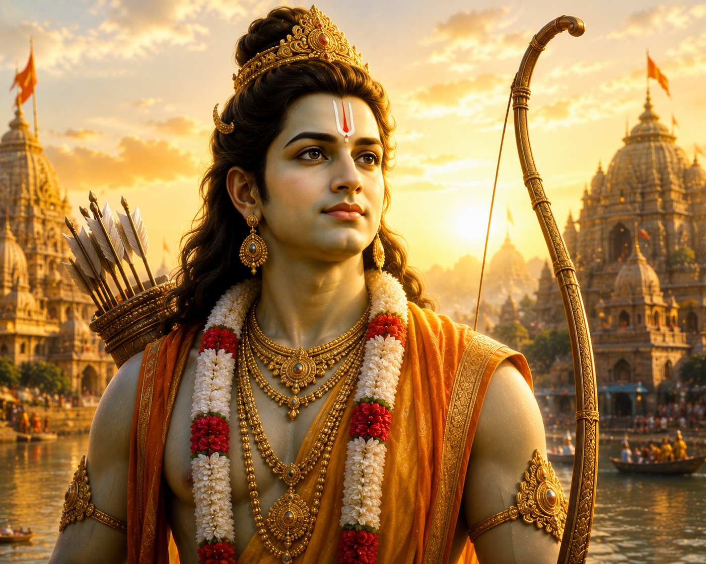
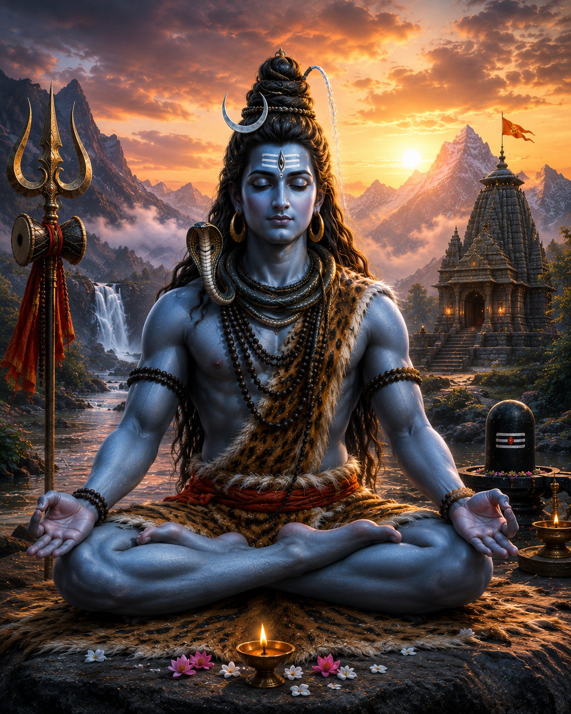
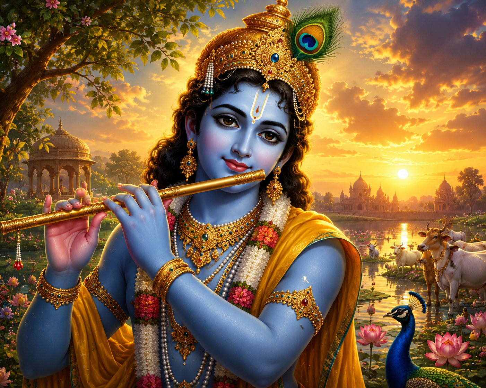
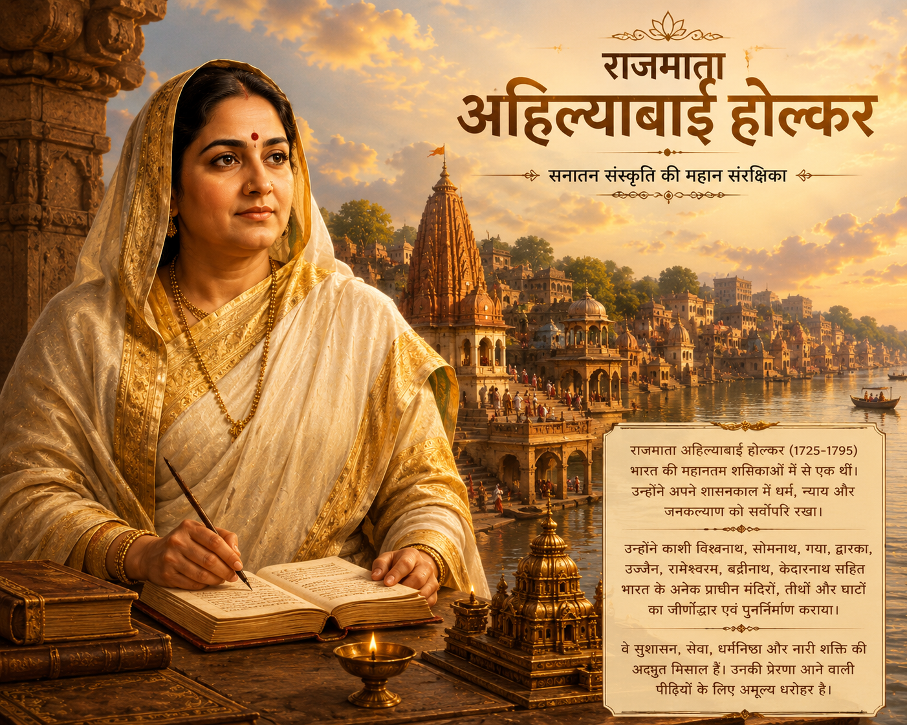
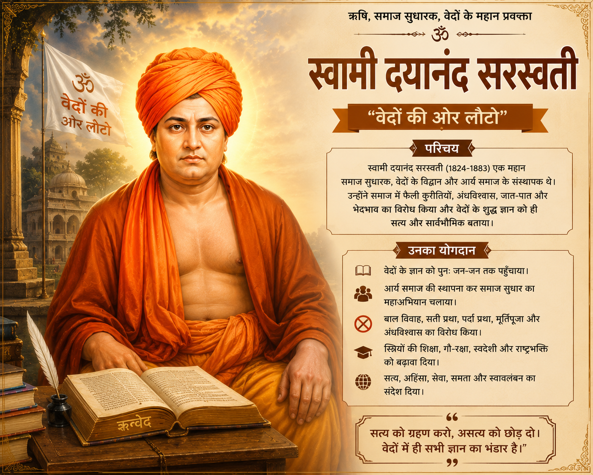
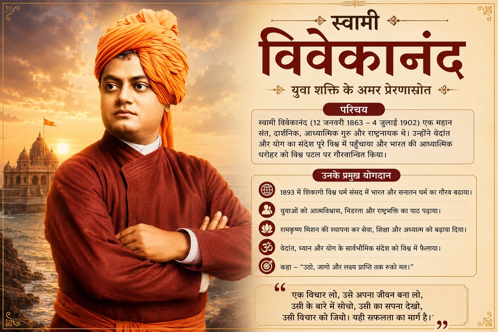

अनादि • अनंत • अविनाशी

भगवान श्रीराम धर्म, मर्यादा, त्याग और आदर्श शासन के प्रतीक हैं। उनका जीवन सत्य, न्याय, कर्तव्य और करुणा का मार्ग दिखाता है। रामराज्य न्याय, समरसता और सुख-शांति का आदर्श है।
अगला →
भगवान शिव योग, तपस्या, करुणा और परिवर्तन के प्रतीक हैं। शिव तत्व हमें आत्मज्ञान, संतुलन और कल्याण की ओर ले जाता है। वे आदियोगी और आदिगुरु के रूप में पूजनीय हैं।
अगला →
भगवान श्रीकृष्ण ने गीता के माध्यम से कर्मयोग, भक्तियोग और ज्ञानयोग का संदेश दिया। उनका जीवन नीति, प्रेम, धर्म रक्षा और मानवता के मार्गदर्शन का प्रतीक है।
अगला →
राजमाता अहिल्याबाई होल्कर सनातन संस्कृति की महान संरक्षिका थीं। उन्होंने अनेक मंदिरों, तीर्थों और घाटों के पुनर्निर्माण में महत्वपूर्ण योगदान दिया। वे न्याय, सेवा और धर्मनिष्ठ शासन की प्रेरणा हैं।
अगला →
स्वामी दयानंद सरस्वती ने “वेदों की ओर लौटो” का संदेश दिया। उन्होंने समाज में फैले अंधविश्वास, कुरीतियों और भेदभाव का विरोध कर वैदिक ज्ञान और सामाजिक सुधार का मार्ग दिखाया।
अगला →
स्वामी विवेकानंद ने विश्व को सनातन धर्म का उदार, तार्किक और मानवतावादी संदेश दिया। उन्होंने युवाओं को आत्मविश्वास, सेवा, राष्ट्र निर्माण और अध्यात्म से जुड़ने की प्रेरणा दी।
अगला →